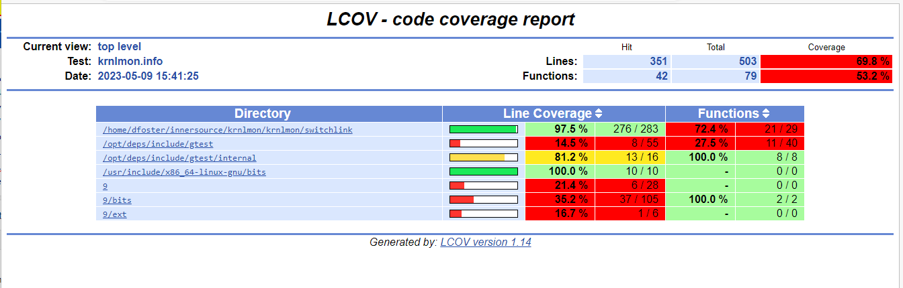
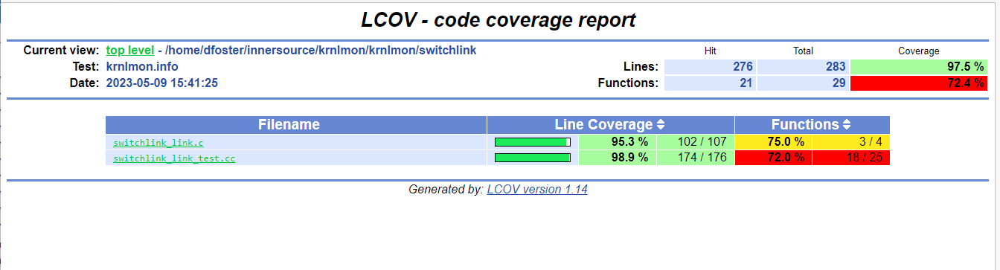
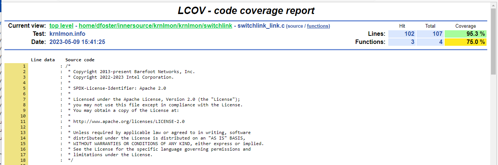
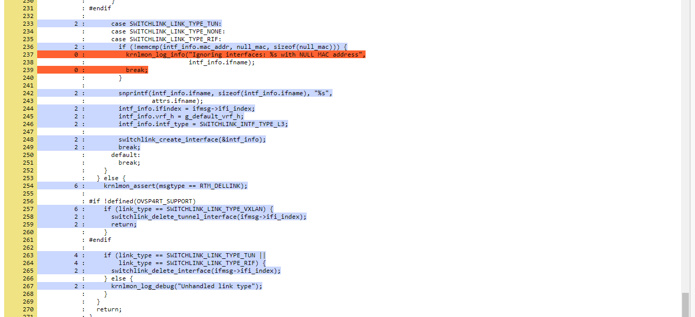

Running Krnlmon Unit Tests
Building the unit tests
To run the Kernel Monitor unit tests, you must first build P4 Control Plane for DPDK or ES2K:
./make-all.sh --target=es2k
Running the unit tests
To run the unit tests, change to the build directory and issue the ctest command:
(cd build; ctest -L krnlmon --output-on-failure)
When specified without any arguments, the ctest command runs all the unit tests.
For example:
milady@dewinter:~/recipe$ (cd build; ctest -L krnlmon --output-on-failure)
Test project /home/milady/recipe/build
Start 1: switchlink_link_test
1/1 Test #1: switchlink_link_test ............. Passed 0.00 sec
100% tests passed, 0 tests failed out of 1
Total Test time (real) = 0.01 sec
The build summary will be displayed on the console.
Details of the run are stored in a log file:
milady@dewinter:~/recipe$ more build/Testing/Temporary/LastTest.log
Start testing: Apr 25 16:30 PDT
----------------------------------------------------------
1/1 Testing: switchlink_link_test
1/1 Test: switchlink_link_test
Command: "/home/milady/recipe/build/krnlmon/krnlmon/switchlink/switchlink_link_test"
Directory: /home/milady/recipe/build/krnlmon/krnlmon/switchlink
"switchlink_link_test" start time: Apr 25 16:30 PDT
Output:
----------------------------------------------------------
Running main() from /home/milady/new.recipe/setup/gtest/googletest/src/gtest_main.cc
[==========] Running 5 tests from 1 test suite.
[----------] Global test environment set-up.
[----------] 5 tests from SwitchlinkTest
[ RUN ] SwitchlinkTest.can_add_generic_link
[ OK ] SwitchlinkTest.can_add_generic_link (0 ms)
[ RUN ] SwitchlinkTest.can_add_vxlan_link
[ OK ] SwitchlinkTest.can_add_vxlan_link (0 ms)
[ RUN ] SwitchlinkTest.cannot_delete_generic_link
[ OK ] SwitchlinkTest.cannot_delete_generic_link (0 ms)
[ RUN ] SwitchlinkTest.can_delete_vxlan_link
[ OK ] SwitchlinkTest.can_delete_vxlan_link (0 ms)
[ RUN ] SwitchlinkTest.can_delete_tunnel_link
[ OK ] SwitchlinkTest.can_delete_tunnel_link (0 ms)
[----------] 5 tests from SwitchlinkTest (0 ms total)
[----------] Global test environment tear-down
[==========] 5 tests from 1 test suite ran. (0 ms total)
[ PASSED ] 5 tests.
<end of output>
Test time = 0.01 sec
----------------------------------------------------------
Test Passed.
"switchlink_link_test" end time: Apr 25 16:30 PDT
"switchlink_link_test" time elapsed: 00:00:00
----------------------------------------------------------
End testing: Apr 25 16:30 PDT
Measuring code coverage
Enabling measurement
To measure unit test code coverage, you must enable the feature when you build the P4 Control Plane.
You can do this via the make-all script:
./make-all.sh --target=es2k --coverage
Or as a CMake command-line parameter:
-DTEST_COVERAGE=ON
Measuring coverage
Coverage data is collected when the unit tests are run.
You can obtain the results by running CTest on a specific target:
(cd build; ctest -L krnlmon -T coverage)
You can also run the tests and request the coverage report in a single command:
(cd build; ctest -L krnlmon -T test -T coverage)
Console output:
milady@dewinter:~/recipe$ (cd build; ctest -T test -T coverage)
Site: dewinter Build name: Linux-c++
Create new tag: 20230509-2238 - Experimental
Test project /home/milady/recipe/build
Start 1: switchlink_link_test
1/1 Test #1: switchlink_link_test ............. Passed 0.00 sec
100% tests passed, 0 tests failed out of 1
Total Test time (real) = 0.01 sec
Performing coverage
Processing coverage (each . represents one file):
..
Accumulating results (each . represents one file):
..
Covered LOC: 276
Not covered LOC: 7
Total LOC: 283
Percentage Coverage: 97.53%
Consolidating the data
To generate the detailed coverage report, you must first consolidate the measurement data:
lcov --capture \
--directory build/krnlmon/krnlmon/switchlink/CMakeFiles/switchlink_link_test.dir/ \
--output-file krnlmon.info
Console output:
Capturing coverage data from build/krnlmon/krnlmon/switchlink/CMakeFiles/switchlink_link_test.dir/
Found gcov version: 9.4.0
Using intermediate gcov format
Scanning build/krnlmon/krnlmon/switchlink/CMakeFiles/switchlink_link_test.dir/ for .gcda files ...
Found 2 data files in build/krnlmon/krnlmon/switchlink/CMakeFiles/switchlink_link_test.dir/
Processing switchlink_link_test.dir/switchlink_link.c.gcda
Processing switchlink_link_test.dir/switchlink_link_test.cc.gcda
Finished .info-file creation
Generating the report
Now generate the HTML report:
genhtml krnlmon.info --output-directory coverage
Console output:
Reading data file krnlmon.info
Found 24 entries.
Found common filename prefix "/usr/include/c++"
Writing .css and .png files.
Generating output.
Processing file /home/milady/recipe/krnlmon/krnlmon/switchlink/switchlink_link_test.cc
Processing file /home/milady/recipe/krnlmon/krnlmon/switchlink/switchlink_link.c
Processing file /opt/deps/include/gtest/gtest-message.h
Processing file /opt/deps/include/gtest/gtest.h
Processing file /opt/deps/include/gtest/gtest-printers.h
Processing file /opt/deps/include/gtest/internal/gtest-internal.h
Processing file /opt/deps/include/gtest/internal/gtest-port.h
Processing file 9/sstream
Processing file 9/tuple
Processing file 9/ostream
Processing file 9/bits/ptr_traits.h
Processing file 9/bits/char_traits.h
Processing file 9/bits/allocator.h
Processing file 9/bits/move.h
Processing file 9/bits/unique_ptr.h
Processing file 9/bits/stl_iterator_base_funcs.h
Processing file 9/bits/alloc_traits.h
Processing file 9/bits/basic_string.h
Processing file 9/bits/basic_string.tcc
Processing file 9/ext/new_allocator.h
Processing file 9/ext/type_traits.h
Processing file /usr/include/x86_64-linux-gnu/bits/stdio2.h
Processing file /usr/include/x86_64-linux-gnu/bits/string_fortified.h
Processing file /usr/include/x86_64-linux-gnu/bits/byteswap.h
Writing directory view page.
Overall coverage rate:
lines......: 69.8% (351 of 503 lines)
functions..: 53.2% (42 of 79 functions)
Viewing the report
To view the coverage report, use a browser to open coverage/index.html.

To see the summary report for the krnlmon/switchlink directory, click on its link:

To see the detailed report for switchlink_link.c, click on its link:

Scroll down the file page to see which parts of the file are covered by the unit test (in blue), and which parts are not covered (in orange)

Minimal Builds
The CMake build system provides targets that allow unit tests to be built and run without needing to build all of P4 Control Plane.
krnlmon-test
To perform a minimal build and run the Kernel Monitor unit tests for DPDK:
cmake -B build -DTDI_TARGET=dpdk -DWITH_OVSP4RT=off
Console output:
-- The C compiler identification is GNU 9.4.0
-- The CXX compiler identification is GNU 9.4.0
.
.
-- Configuring done
-- Generating done
-- Build files have been written to: /home/peabody/recipe/build
peabody@wabac:~/recipe$ cmake --build build -j4 --target krnlmon-test
Scanning dependencies of target switchlink_link_test
Scanning dependencies of target switchlink_address_test
Scanning dependencies of target switchlink_neighbor_test
[ 16%] Building C object krnlmon/krnlmon/switchlink/CMakeFiles/switchlink_link_test.dir/switchlink_globals.c.o
[ 16%] Building CXX object krnlmon/krnlmon/switchlink/CMakeFiles/switchlink_address_test.dir/switchlink_address_test.cc.o
[ 33%] Building CXX object krnlmon/krnlmon/switchlink/CMakeFiles/switchlink_link_test.dir/switchlink_link_test.cc.o
[ 50%] Building CXX object krnlmon/krnlmon/switchlink/CMakeFiles/switchlink_neighbor_test.dir/switchlink_neigh_test.cc.o
[ 50%] Building C object krnlmon/krnlmon/switchlink/CMakeFiles/switchlink_neighbor_test.dir/switchlink_globals.c.o
[ 66%] Building C object krnlmon/krnlmon/switchlink/CMakeFiles/switchlink_link_test.dir/switchlink_link.c.o
[ 83%] Building C object krnlmon/krnlmon/switchlink/CMakeFiles/switchlink_neighbor_test.dir/switchlink_neigh.c.o
[ 83%] Building C object krnlmon/krnlmon/switchlink/CMakeFiles/switchlink_address_test.dir/switchlink_address.c.o
[100%] Building C object krnlmon/krnlmon/switchlink/CMakeFiles/switchlink_address_test.dir/switchlink_globals.c.o
[100%] Linking CXX executable switchlink_address_test
[100%] Linking CXX executable switchlink_link_test
[100%] Built target switchlink_address_test
[100%] Linking CXX executable switchlink_neighbor_test
[100%] Built target switchlink_link_test
[100%] Built target switchlink_neighbor_test
Scanning dependencies of target krnlmon-test
Test project /home/milady/recipe/build
Start 1: switchlink_link_test
1/3 Test #1: switchlink_link_test ............. Passed 0.01 sec
Start 2: switchlink_address_test
2/3 Test #2: switchlink_address_test .......... Passed 0.00 sec
Start 3: switchlink_neighbor_test
3/3 Test #3: switchlink_neighbor_test ......... Passed 0.01 sec
100% tests passed, 0 tests failed out of 3
Total Test time (real) = 0.02 sec
[100%] Built target krnlmon-test
krnlmon-coverage
To perform a minimal build, run the unit tests, and measure coverage for ES2K:
Configure the build
cmake -B build -DTDI_TARGET=es2k -DWITH_OVSP4RT=off -DTEST_COVERAGE=on
Console output:
-- The C compiler identification is GNU 9.4.0
-- The CXX compiler identification is GNU 9.4.0
.
.
Building ES2K_TARGET
-- WITH_KRNLMON="ON"
-- WITH_OVSP4RT="off"
.
.
-- Configuring done
-- Generating done
-- Build files have been written to: /home/peabody/recipe/build
Run tests and generate report
cmake --build build -j4 --target krnlmon-test krnlmon-coverage
Console output:
Scanning dependencies of target switchlink_link_test
Scanning dependencies of target switchlink_neighbor_test
Scanning dependencies of target switchlink_address_test
.
.
Test project /home/peabody/recipe/build
Start 1: switchlink_link_test
1/3 Test #1: switchlink_link_test ............. Passed 0.00 sec
Start 2: switchlink_address_test
2/3 Test #2: switchlink_address_test .......... Passed 0.00 sec
Start 3: switchlink_neighbor_test
3/3 Test #3: switchlink_neighbor_test ......... Passed 0.01 sec
100% tests passed, 0 tests failed out of 3
Total Test time (real) = 0.01 sec
Performing coverage
Processing coverage (each . represents one file):
......
Accumulating results (each . represents one file):
......
Covered LOC: 709
Not covered LOC: 9
Total LOC: 718
Percentage Coverage: 98.75%
[100%] Built target krnlmon-test
Scanning dependencies of target krnlmon-coverage
Capturing coverage data from /home/peabody/recipe/build
Found gcov version: 9.4.0
Using intermediate gcov format
Scanning /home/peabody/recipe/build for .gcda files ...
Found 6 data files in /home/peabody/recipe/build
.
.
Writing directory view page.
Overall coverage rate:
lines......: 81.1% (872 of 1075 lines)
functions..: 65.0% (104 of 160 functions)
Built target krnlmon-coverage
The coverage report is generated in the build/Testing/coverage directory.